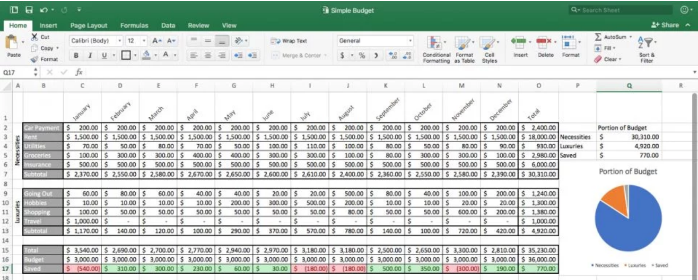
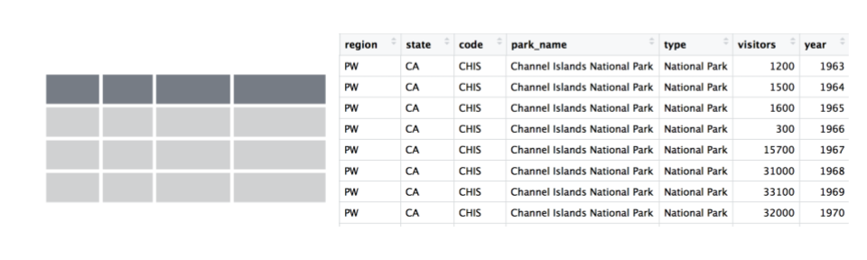

Chapter 2 Overview
TODO: add Star Wars illustrations & Wickham R4DS illustration (as slides? potentially adapt UQ slides)
2.1 Welcome!
In this workshop you will learn hands-on how to begin to interoperate between Excel and R. But this workshop is not only about learning R; we will learn R using additional software: RStudio and GitHub. These tools will help us develop good habits for working in a reproducible and collaborative way — critical attributes of the modern analyst.
It’s going to be fun and empowering!
2.2 Why learn R if I know Excel?
Excel is a widely used and powerful tool for working with data, and it is great for a lot of things. This is convenient and familiar; most of us have had their first experiences with data through Excel or other spreadsheet programs. As Jenny Bryan has said, “Excel is how we learn that we love data analysis”.
Excel is great for data entry. Can also be good for looking at data and feeling like you can touch it, and creating quick exploratory figures.
Excel can also become problematic with extending to analyses. This is because there aren’t firm lines between what is data and what is analyses. For example, in this sheet:

This makes the analytical steps taken are not readily apparent, nor easy to reproduce. Have you ever done forensics on an Excel sheet, trying to understand what happened between columns or sheets? Maybe it was even your own Excel file from the (recent) past.
This also makes them pretty brittle/sensitive to minor changes. Has seeing this ever given you a feeling of horror:

So while it is great how easily you can update different fields and add analytical steps in an Excel sheet, it can also be a bit hard to handle, particularly as projects get more complicated.
So, as automation, reproducibility, collaboration, and frequent reporting become increasingly expected in data analysis, a good option for Excel users is to extend their workflows with R.
2.2.1 What to expect
This is going to be a fun workshop.
This workshop will give you hands-on experience and confidence with R, and how to interoperate between Excel and R — it is not about wholesale replacing everything you do in Excel into R. We will learn technical skills that you can incrementally incorporate into your existing workflows. But a big part of interfacing between Excel and R is not only skillsets, it is mindsets. It is the mindset about how we think about data. How we shape data and organize data and analyze data. And how what we do now can make our analytical life better in the future.
A modern R user has a workflow framed around collaboration, and uses an ecosystem of tools and practices. We will be learning three main things all at the same time:
- coding with best practices (R/RStudio/tidyverse)
- collaborative bookkeeping (Git/GitHub)
- reporting and publishing (RMarkdown/GitHub)
R users keep raw data separate from their analyses, which means having data in one file and written computational commands saved as a separate file. We also embrace the concept of “tidy data”, where the data has a rectangular shape and each column is a variable and each row is an observation. Tidy data is a way of life.

We are going to go through a lot in these two days and it’s less important that you remember it all. More importantly, you’ll have experience with it and confidence that you can do it. The main thing to take away is that there are good ways to work between R and Excel; we will teach you to expect that so you can find what you need and use it! A theme throughout is that tools exist and are being developed by real, and extraordinarily nice, people to meet you where you are and help you do what you need to do.
You are all welcome here, please be respectful of one another. Everyone in this workshop is coming from a different place with different experiences and expectations. But everyone will learn something new here, because there is so much innovation in the data science world. Instructors and helpers learn something new every time, from each other and from your questions. If you are already familiar with some of this material, focus on how we teach, and how you might teach it to others. Use these workshop materials not only as a reference in the future but also for talking points so you can communicate the importance of these tools to your communities. A big part of this training is not only for you to learn these skills, but for you to also teach others and increase the value and practice of open data science in science as a whole.
2.3 Guiding principles / recurring themes
“Keep the raw data raw” — A hard line separating raw data and analyses. In R, we have data in one file and written computational commands saved as a separate file.
Scripted analyses — We write analytical logic in code (rather than clicks) so that can be understood, rerun, and built upon.
Learn from data that are not your own — We aren’t using your data in this workshop, but you will see similiarities and patterns, and you’ll see that these tools and practices apply to your work.
Think ahead for Future You, Future Us. Help make lives easier — first and foremost your own. Create breadcrumbs for yourselves and others: document and share your work.
2.4 Resources
R is not only a language, it is an active community of developers, users, and educators (often these traits are in each person). This workshop and book based on many excellent materials created by other members in the R community, who share their work freely to help others learn. Using community materials is how WE learned R, and each chapter of the book will have Resources listed for further reading into the topics we discuss. And, when there is no better way to explain something (ahem Jenny Bryan), we will quote or reference that work directly.
- What They Forgot to Teach You About R — Jenny Bryan & Jim Hester
- Stat545 — Jenny Bryan & Stat545 TAs
- Where do Things Live in R? REX Analytics
- Spreadsheet Drama (Episode 9) — Not So Standard Deviations with Roger Peng & Hilary Parker
- more to come!